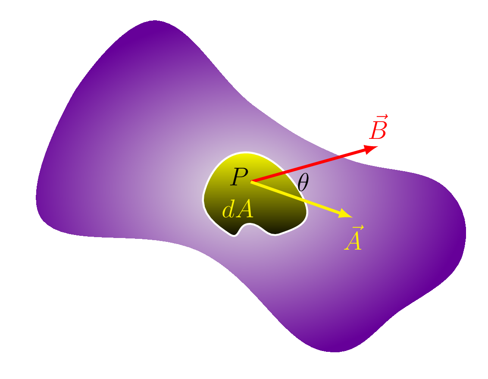
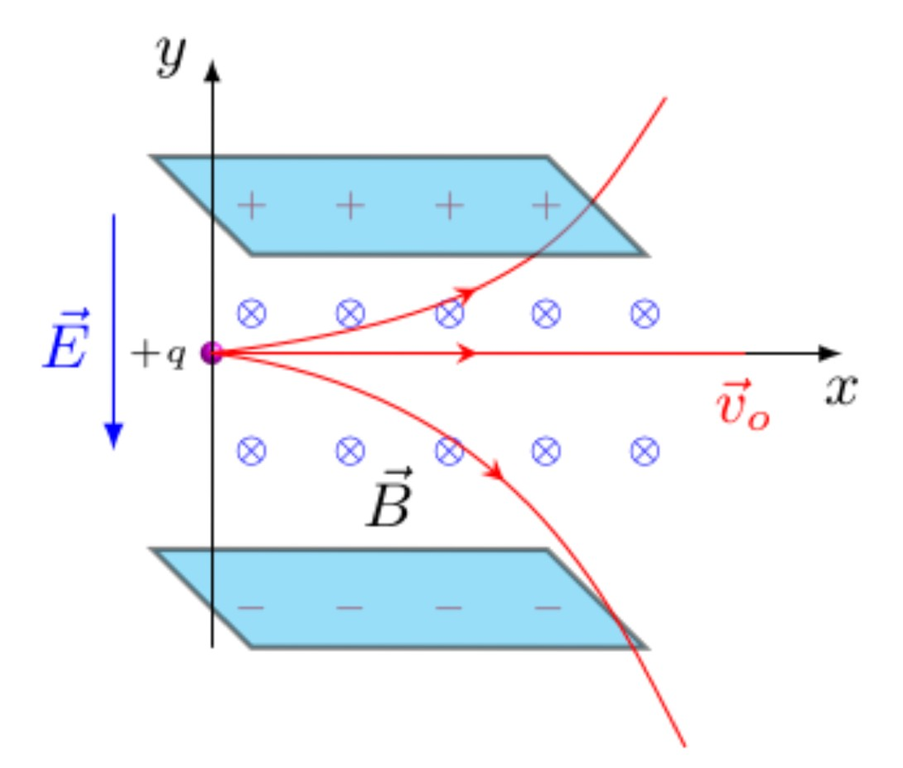
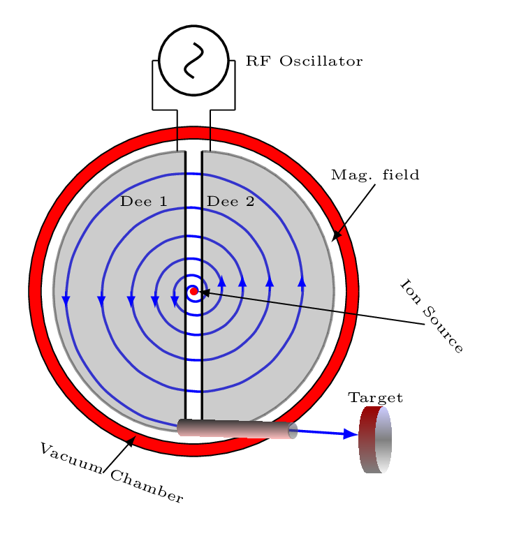
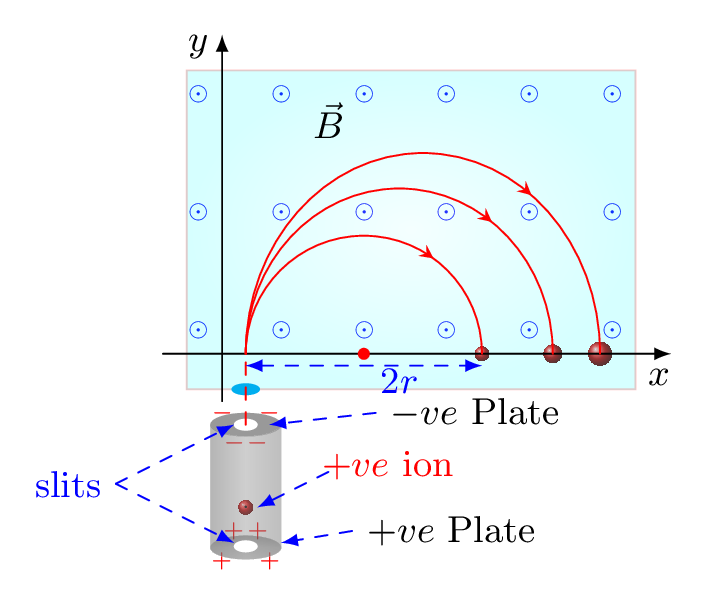
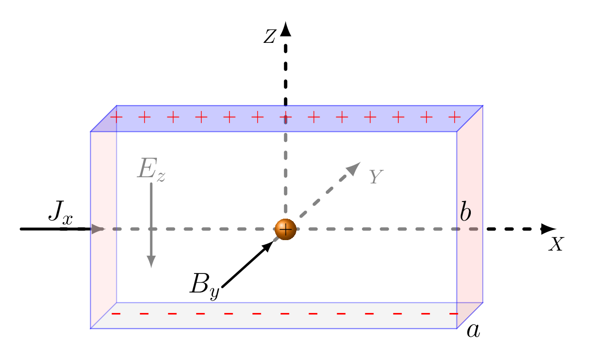

Subsection 3.1.5 Magnetic Flux, \(\Phi_{B}\)
The number of magnetic field lines passing through any surface area perpendicularly is known as a magnetic flux. Its unit is Weber (wb). It is a scalar quantity. However, the flux per unit area describes a magnetic field \(B\text{.}\)

Consider a small area \(\,dA\) is placed at any point P in space through which \(\Phi_{B}\) field lines are passing normally as shown in Figure 3.1.8, then the magnetic field B is given by
\begin{equation*}
B=\frac{\Phi_{B}}{\,dA}
\end{equation*}
\begin{equation}
\Phi_{B}=\vec{B}\cdot\vec{\,dA} =B dA\cos\theta\tag{3.1.5}
\end{equation}
where \(\theta\) is the angle between \(\vec{B}\) and \(\vec{\,dA}\text{.}\) Hence the total magnetic flux through that area is given by
\begin{equation}
\Phi_{B} = \int\vec{B}\cdot\vec{dA}\tag{3.1.6}
\end{equation}
\((unit:\quad Weber = W_{b} = T.m^{2} = N.m/A = J/A).\)
There are three ways to change magnetic flux
- change the size of area \(A\) [Figure 3.1.9.(a)];
- change the magnitude of magnetic field \(B\) [Figure 3.1.9.(a)]; and
- change the orientation of plane \(\theta\) [Figure 3.1.9.(b)].
Subsubsection 3.1.5.1 Gauss’s Law for Magnetism
The net magnetic flux through a closed surface is zero, ie.,
\begin{equation*}
\oint \vec{B}\cdot\vec{\,dA}= 0
\end{equation*}
This statement is based on the experimental fact that isolated magnetic poles (monopoles) never exist and that all magnetic fields are actually generated by circulating currents. The number of magnetic field-lines entering any closed surface is always equal to the number of field-lines leaving that surface. Thus, magnetic field-lines behave in a quite different manner to electric field-lines, which begin on positive charges, end on negative charges, and never form closed loops.
Subsubsection 3.1.5.2 Velocity Selector

A velocity selector is a region where a uniform electric field, \(E\) is perpendicular to a uniform magnetic field, \(B\) and both are perpendicular to the initial velocity, \(v\) of the charged particles. The force exerted on a charged particle by the electric field is
\begin{equation*}
F_{E} = qE \quad downward
\end{equation*}
and the force exerted by the magnetic field is
\begin{equation*}
F_{B} = qvB, \quad upward
\end{equation*}
as long as the velocity is perpendicular to the field. If the two forces are equal and opposite, the net force
\begin{equation*}
\vec{F}=\vec{F_{E}}-\vec{F_{B}}=0
\end{equation*}
and the particle passes through the region without changing direction. However, magnetic force is velocity dependent hence when charges traveling faster or slower than the ones that go straight through will be deflected oneway or another out of the beam as shown in Figure 3.1.10. The cross in a circle representing the magnetic field is going into the paper. If a positive charge moves into a magnetic field with direction perpendicular to the field, it will follow a circular path where magnetic force provides a necessary centripetal force, i.e., 1
\begin{equation*}
qvB = \frac{mv^{2}}{r}
\end{equation*}
\begin{equation*}
\text{or,}\quad r=\frac{mv}{qB}
\end{equation*}
This principle is applied in mass spectrometer to seperate of heavy ions (or, isotopes) from lighter ones. If
\begin{equation*}
F_{E} = F_{B}
\end{equation*}
\begin{equation*}
or, \quad v=v_{o}= \frac{E}{B}
\end{equation*}
then charge moves without deflection along x axis. If \(v \gt v_{o}\) then \(F_{B}\) increases and the charge deflects along +y axis and follow the upward circular track. If \(v \lt v_{o}\) then \(F_{B}\) decreases and the charge deflects along -y axis and follow the downward citcular track.
Subsubsection 3.1.5.3 Cyclotron Frequency
The cyclotron is a device for accelerating ions in a constant magnetic field by the repeated application of accelerating potentials. A cyclotron consists of two hollow semicircular electrodes, called dees, mounted back to back, separated by a narrow gap, in an evacuated chamber between the poles of a magnet. An electric field, alternating in polarity, is created in the gap by a radio-frequency oscillator.

The positive ions produced from a source at the center are accelerated by a dee which is at the negative potential at that moment. Due to the presence of magnetic field (pointed into the page) the ions will move in a circular path inside the dees. The magnetic field and the frequency of applied voltage are so adjusted that as the ion comes out of a dee, the dees change their polarity (+ve dee becomes -ve and vice-versa) and the ion is further accelerated and moves with higher velocity along a circular path of greater radius as shown in Figure 3.1.11. Once the ion reaches to the periphery of the dees it gets deflected out from the dees to bombard a target.
Suppose the positive ion having charge \(q\) moves in a dee with a velocity \(v\text{,}\) then magnetic force = centripetal force, i.e.,
\begin{equation*}
Bqv = \frac{mv^{2}}{r}
\end{equation*}
\begin{equation}
\text{or,}\quad r=\frac{mv}{Bq} \tag{3.1.7}
\end{equation}
where \(m\) is the mass of ion, \(r\) is the radius of the path of ion in a dee, and \(B\) is the magnetic field strength. The angular velcity \(\omega \) of the ion is given by,
\begin{equation}
\omega =\frac{v}{r} = \frac{qB}{m} \tag{3.1.8}
\end{equation}
The time taken by the ion in describing a semi circle, ie., to turning by an angle \(\pi\) is,
\begin{equation*}
\omega=\frac{\theta}{t}=\frac{\pi}{t}
\end{equation*}
\begin{equation}
\text{or,}\quad t= \frac{\pi}{\omega} = \frac{\pi m}{Bq} \tag{3.1.9}
\end{equation}
Hence the time taken by an ion in a dee is constant and is independent upon its velocity and radius. From eqn. (3.1.9) it is clear if \(\frac{m}{q}\) is known for any ion then \(B\) can be calculated for producing resonance with the high frequency alternating potential source, i.e., the frequency of alternating source can be
\begin{equation}
f=\frac{1}{T} = \frac{1}{2 t} = \frac{Bq}{2 \pi m} \tag{3.1.10}
\end{equation}
Subsubsection 3.1.5.4 Mass Spectrometer

It is an instrument used to measure the masses of ions. The principle behind mass spectrometry is that a charged particle passing through a magnetic field is deflected along a circular path on a radius that is proportional to the mass to charge ratio, \(m/e.\) Ions are accelerated through the region between electric potentials and enter into the uniform magnetic field where it follows the circular path and falls at different location depends upon it mass as shown in Figure 3.1.12.
Subsubsection 3.1.5.5 Hall Effect

When an electrical current passes through a conductor placed in a magnetic field, a potential proportional to the current and to the magnetic field is developed across the material in a direction perpendicular to both the current and to the magnetic field. This effect is known as the Hall effect . The magnetic field exerts a transverse force on the moving charge carriers which tends to push them to one side of the conductor and develops a potential difference across the conductor known as Hall voltage as shown in Figure 3.1.13. Hall effect is very useful in determining types of charge carriers in a semiconductor.
Magnetic force acting on a charge particle is always perpendicular to the velocity of the charge in a uniform magnetic field hence, it takes a circular path. For a particle moving in a gravitational field, acquires vertical and horizontal components of velocity and hence starts moving in a parabolic path. If the projectlie has sufficient horizontal velocity then it also starts rotating around the planet in a circular path. Gravitational force and field are acting along the same direction but this is not the case for magnetic force and field. \(F_{B}=qv\times B\text{;}\) but \(F_{g}=mg\text{.}\)